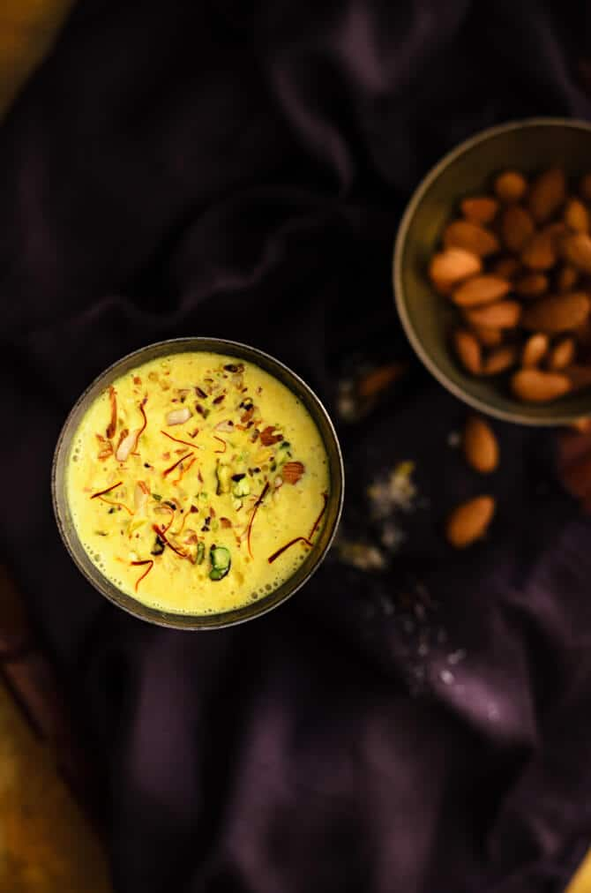

Kesar Milk Recipe

Delicious and Authentic : Kesar(Saffron) Milk
his homemade kesar milk is rich, fragrant, and absolutely delicious—crafted with love and the finest saffron for a warm, comforting treat. Ready to enjoy in minutes!
Description
Kesar milk, or saffron milk, is a luxurious, aromatic drink made by infusing warm milk with saffron strands, cardamom, and a touch of sugar. The saffron adds a beautiful golden hue and a unique floral taste, while the cardamom gives it a subtle warmth. This homemade version is rich, creamy, and soothing—perfect for a cozy evening or as a nourishing treat. A delightful blend of flavors, kesar milk not only tastes delicious but is also known for its health benefits, making it both a comforting and wholesome drink.
Key Ingredients
- 2 cups milk
- A pinch of saffron strands
- 1-2 teaspoons sugar (adjust to taste)
- 1/4 teaspoon cardamom powder
- 1 tablespoon chopped nuts (optional, for garnish)
Recipe for the delicious Kesar Milk
- Boil 2 cups of milk in a saucepan over medium heat.
- Once the milk starts to heat, add a pinch of saffron strands and allow them to steep in the milk.
- Stir in 1-2 teaspoons of sugar (adjust to your preference) and mix until dissolved.
- Add 1/4 teaspoon of cardamom powder and stir well to combine.
- Let the milk simmer for 5-7 minutes to infuse the flavors.
- Optional: Garnish with chopped nuts like almonds or pistachios for a richer taste.
- Serve warm and enjoy your homemade, aromatic kesar milk!
Hope you loved the recipe.